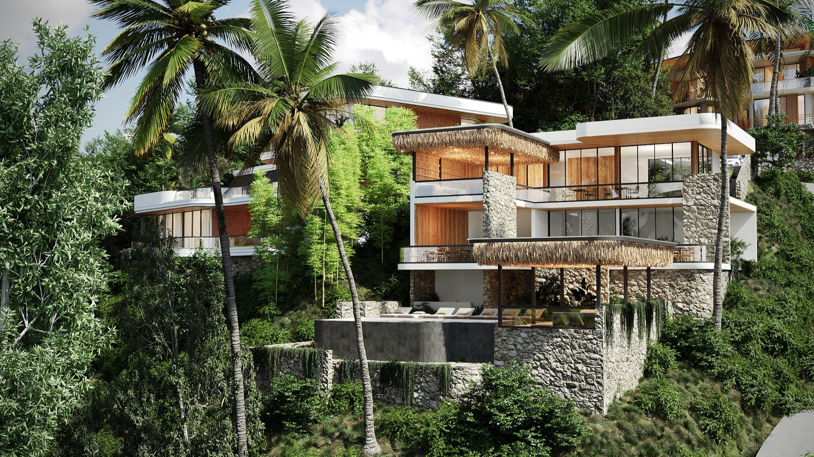

Chaloklum is a working fishing village, which means one thing for dinner: the seafood is about as fresh as it gets. Here is where the locals and long-stayers actually eat, from the pier to the beach.
You will not find a glossy restaurant strip here, and that is the charm. The food in Chaloklum is honest and close to the source, with a few quietly excellent cafés and European spots mixed in. A quick note before you go: small island kitchens change with the seasons, so it is always worth a glance at Google Maps before heading out.
Fresh seafood at the pier
The boats land their catch on the Chaloklum waterfront, and the seafood restaurants sit right where it comes in. Phorn Restaurant is the long-standing local favourite on the pier, doing fresh calamari, prawns, whole fish and Thai curries with a view over the bay. It is the place most people mean when they say "the good seafood in Chaloklum".
The Sunday night market
On Sunday evenings the pier turns into a small street-food market: grilled fish, seafood, pad thai and the usual island sweets, mostly in the 50 to 150 baht range. It is the most relaxed way to eat fresh-off-the-boat seafood, and a lovely way to spend a Sunday night by the water.
Cafés & brunch by the bay
For coffee, breakfast and slow mornings, Kaif Phangan is the beachfront café-deli in the heart of the village: eggs benedict, sandwiches, homemade cakes, cheese and cold cuts, plus wine and cocktails later in the day. It is a favourite for brunch and a laptop session by the bay.

A few more local favourites
- Beach Garden: an upmarket beachside spot doing European and East-Asian fusion, fresh sushi, steak and cheese platters, with a bar for the evening.
- Pizza on the beach: Chaloklum has a couple of long-running Italian-run pizzerias doing proper thin-crust pies with bay views.
- Gourmet burgers: the village even has a cult burger spot doing handmade patties on home-baked buns, just outside the centre.
Worth the short drive: Thong Sala
The island's main town, Thong Sala, is about 20 minutes south and home to its biggest food scene. The Thong Sala night market is the island's largest, with grilled seafood, som tam, mango sticky rice and the Saturday Walking Street. For something smarter, modern seafood spots and excellent specialty-coffee cafés round out the town.
Locations & coordinates
All within a few minutes of Gaia Residence, on the hill above Chaloklum Bay. Exact pins for the map:
| Place | Area | Coordinates | Map |
|---|---|---|---|
| Phorn Restaurant | Chaloklum pier | 9.7868, 100.0061 | Open ↗ |
| Kaif Phangan | Chaloklum village | 9.7867, 100.0038 | Open ↗ |
| Thong Sala Night Market | Thong Sala (main pier) | 9.7205, 99.9784 | Open ↗ |
Frequently asked questions
Where is the best seafood in Chaloklum?
At the pier, where the catch lands daily. Long-running spots like Phorn Restaurant are local favourites, and the Sunday night market grills fresh seafood street-food style.
Are there good cafés for remote work?
Yes. Beachfront café-delis such as Kaif Phangan serve specialty coffee and brunch with Wi-Fi by the bay, and Thong Sala has more dedicated remote-work cafés.
Is there a night market?
Chaloklum has a Sunday-evening market at the pier, and the island's largest is the Thong Sala night market, open most evenings near the main pier.
Hungry for the place, not just the food? Read why we chose Chaloklum. The Gaia team.